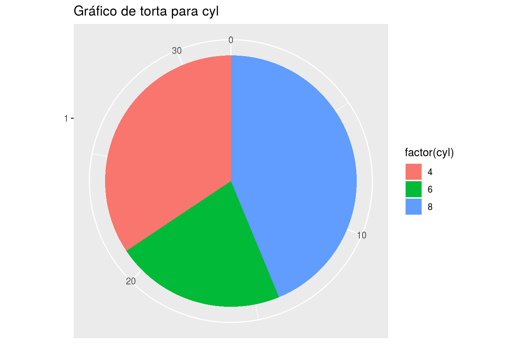
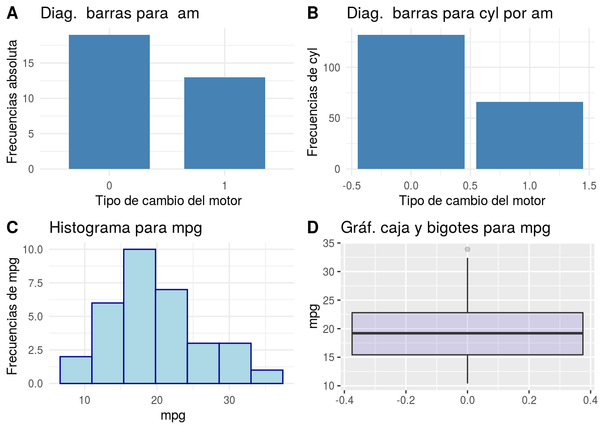
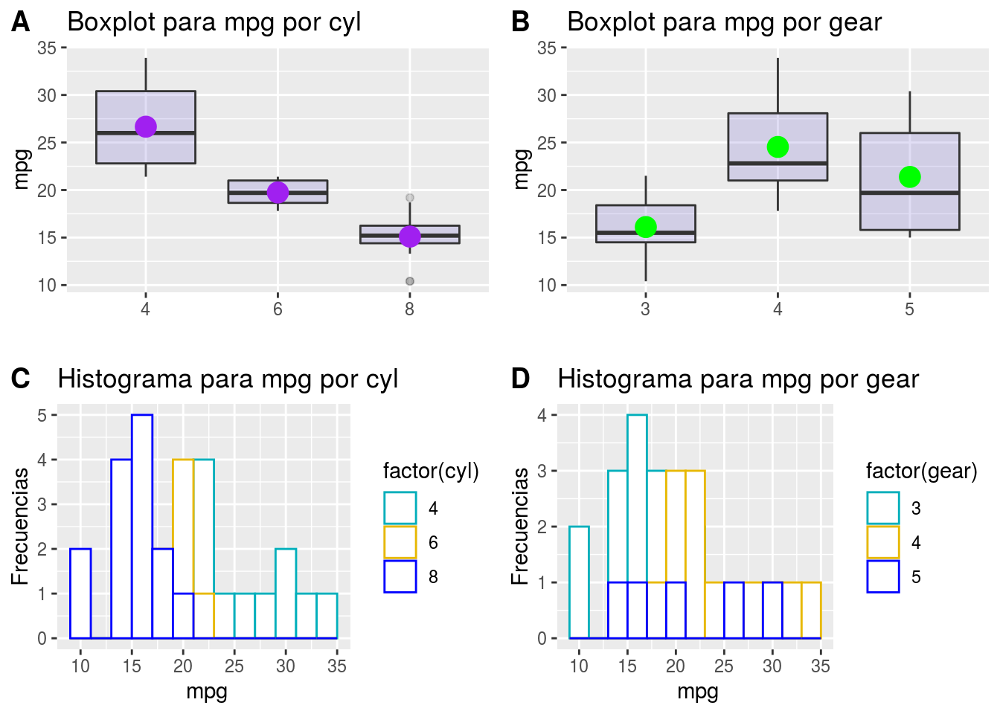
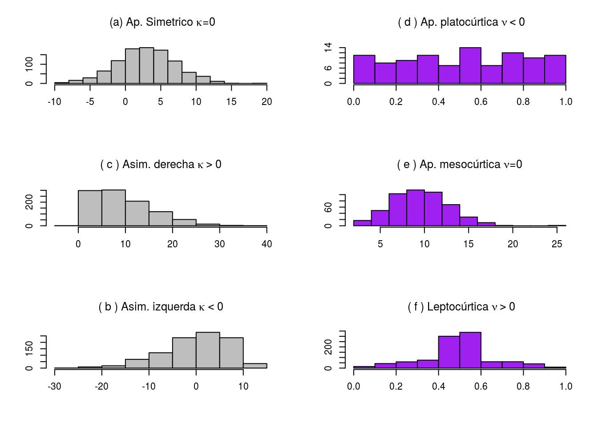
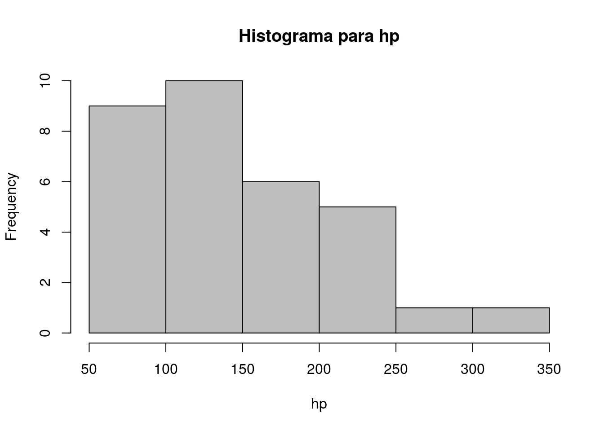
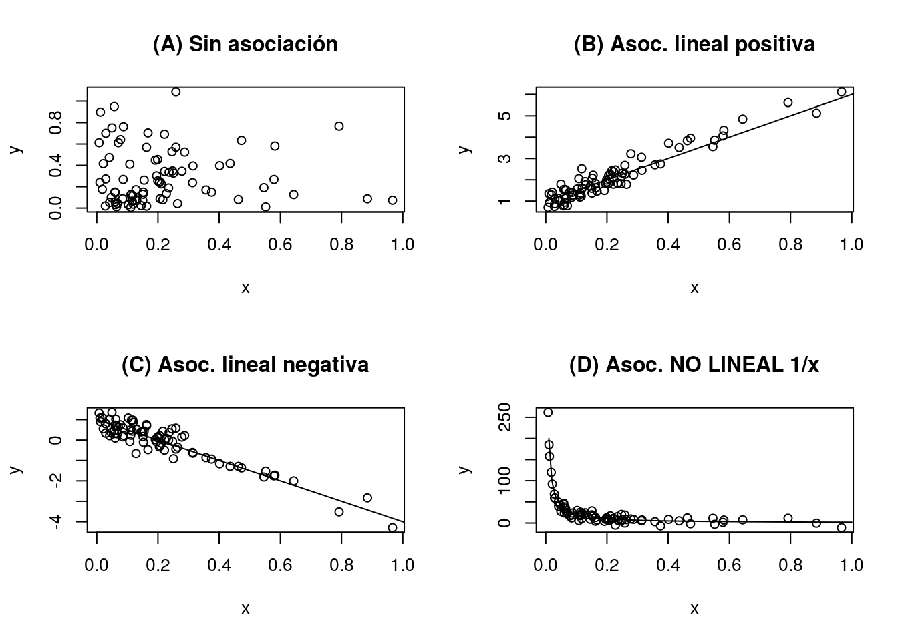
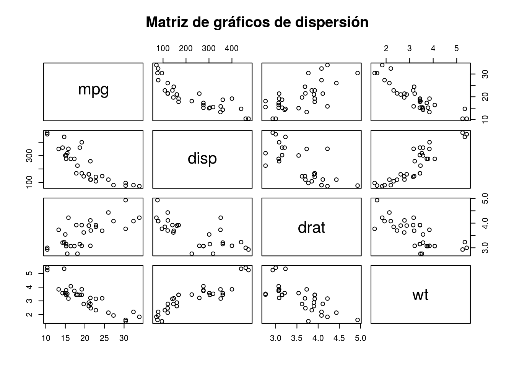
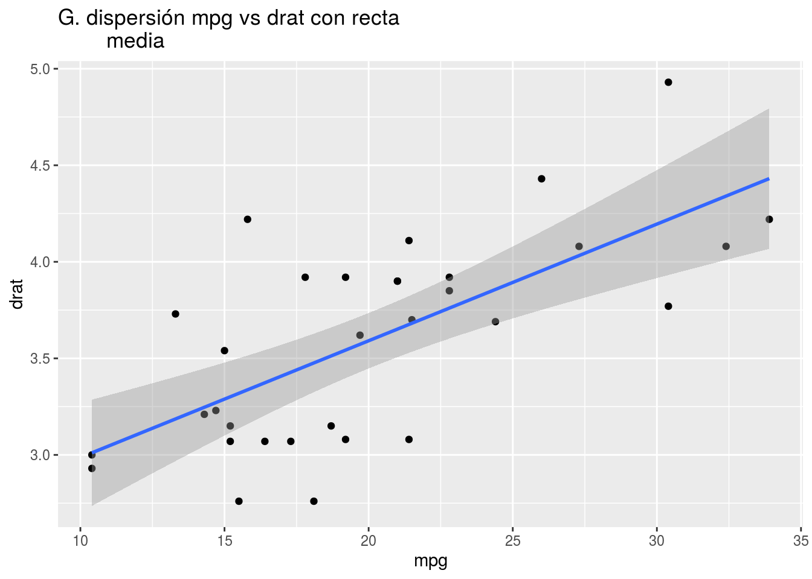

Capítulo1 Reducir y gráficar
1.1 Conceptos elementales
En esta sección presento conceptos básicos para este curso.
Definición.1.1 (a) Una población es un conjunto de personas, objetos o eventos, de los cuales nos interesa estudiar algunas de sus características. (b) Medidas poblacionales son listas de mediciones de ciertas cantidades provenientes de cada individuo o elemento de la población. (c) Un parámetro poblacional es una característica general de la población.
Presento tres ejemplos de población, unidades poblacionales y parámetros poblacionales.
Ejemplo.1.1 (a) Población: total de autos cuyos modelos salieron a la venta en un determinado intervalo de tiempo y funcionan en una determinada país. (b) Medidas poblacionales: razón de millas recorrida por galón de combustible, número de cilindro, caballos de fuerza, tipo de caja de cambios. (c) Parámetro poblacional: media poblacional de razón de millas recorrida por galón de combustible, media poblacional de caballos de fuerza y proporción de autos con caja de cambio automático.
Ejemplo.1.2 (a) Población: individuos de una cierta comuna de una ciudad que poseen problemas de insulina. (b) Medidas poblacionales: presencia o no de menarquía (primera hemorragia menstrual de la mujer), edad, sexo, nivel de igf1 (factor de crecimiento insulínico tipo 1,), etapa de la pubertad y nivel testicular. (c) Parámetro poblacional: promedio de edad poblacional, frecuencias relativas de etapas de la pubertad poblacional y media poblacional de igf\(1\).
Ejemplo.1.3 (a) Población: pacientes de una determinada comunidad que reciben tres métodos diferentes de ventilación durante la anestesia. (b) Medidas poblacionales: concentración de folato (microgramos por litro) y tipo de ventilación recibida por los pacientes1. Parámetros poblacionales: media de folato poblacional y proporciones de factores de niveles de ventilación.
Los conceptos de unidad de observación (o muestral), muestra y base de datos son presentados a continuación.
Nota: en general, el experimento debe ser realizado por un procedimiento que evite el sesgo personal. Esto podría lograrse utilizando algún mecanismo aleatorio. Sin embargo, esto no siempre es posible debido a problemas ético y legales. Esto ocurre en el caso de estudios en el área de la salud donde aplicar un mecanismo aleatorio podría poner en peligro la integridad de los pacientes. En este caso, el experimento se reduce un estudio de los datos disponibles.
Presentamos algunos ejemplos.
Mostraremos un ejemplo de datos en forma de vector y matriz con la base de datos mtcars del paquete de R llamado MASS. Esta base de datos está en formato de data frame y fue publicado en \(1974\) en la revista Motor Trend US magazine. La base mtcars contiene datos de \(32\) autos de modelos diferentes. Por ejemplo, la razón de millas por galón de combustible (mpg) en forma de vector columna de los primeros y últimos valores
\[\mbox{mpg}=(21.0 ; 21.0 ; 22.8 ; 21.4 ,\ldots, 27.3 ; 26.0 ; 30.4 ; 15.8 ; 19.7 ; 15.0 ; 21.4)^\top. \]
En la siguiente matriz se presenta en la primera columna el modelo de los autos estudiados y en las restantes columnas las variables medidas para los \(6\) primeros autos estudiados. Aquí, por ejemplo, “Mazda RX4” es el modelo del primer auto, cuya mpg o razón de millas por galón es igual a \(21\) y su cyl o número de cilindros del motor es igual a \(6\).
## mpg cyl disp hp drat wt qsec vs am gear carb
## Mazda RX4 21.0 6 160 110 3.90 2.620 16.46 0 1 4 4
## Mazda RX4 Wag 21.0 6 160 110 3.90 2.875 17.02 0 1 4 4
## Datsun 710 22.8 4 108 93 3.85 2.320 18.61 1 1 4 1
## Hornet 4 Drive 21.4 6 258 110 3.08 3.215 19.44 1 0 3 1
## Hornet Sportabout 18.7 8 360 175 3.15 3.440 17.02 0 0 3 2
## Valiant 18.1 6 225 105 2.76 3.460 20.22 1 0 3 1Te presento un ejemplo en el area de la salud.
La siguiente base de datos llamada juul2 proviene dal paquete ISwR del programa R. Contiene información de pacientes con problema de insulina. Aquín, por ejemplo, age contiene la edad de los pacientes y menarche presencia o no de menarquía (primera hemorragia menstrual de la mujer).
## age height menarche sex igf1 tanner testvol weight
## 1 NA NA NA NA 90 NA NA NA
## 2 NA NA NA NA 88 NA NA NA
## 3 NA NA NA NA 164 NA NA NA
## 4 NA NA NA NA 166 NA NA NA
## 5 NA NA NA NA 131 NA NA NA
## 6 0.17 NA NA 1 101 1 NA NA
## 7 0.17 NA NA 1 97 1 NA NA
## 8 0.17 NA NA 1 106 1 NA NA
## 9 0.17 NA NA 1 111 1 NA NA
## 10 0.17 NA NA 1 79 1 NA NA
## 11 0.17 NA NA 1 43 1 NA NA
## 12 0.17 NA NA 1 64 1 NA NA
## 13 0.25 NA NA 1 90 1 NA NA
## 14 0.25 NA NA 1 141 1 NA NA
## 15 0.42 NA NA 1 42 1 NA NAEs normal que al aplicar la medición ocurran errores o problemas con los instrumentos de medición. Las normas éticas científicas exigen no ocultar esto sino informarlas. Por ejemplo, un símbolo NA indica que el valor fue perdido. El símbolo NULL indica que el valor obtenido fue nulo o no tiene validez. Se simboliza por Inf para valores que salieron fuera de los límites de los valores de medición del instrumento.
Presentamos otro ejemplo dentro del área de la salud.
## folate ventilation
## 1 243 N2O+O2,24h
## 2 251 N2O+O2,24h
## 3 275 N2O+O2,24h
## 4 291 N2O+O2,24h
## 5 347 N2O+O2,24h
## 6 354 N2O+O2,24h
## 7 380 N2O+O2,24h
## 8 392 N2O+O2,24h
## 9 206 N2O+O2,op
## 10 210 N2O+O2,opPodemos resumir el proceso de análisis de datos en la siguiente figura
Todo comienza con el interés por conocer atributos desconocidos de una determinada población. Aquí son llamados de parámetros poblacionales. Para aprender de estos parámetros se realiza un experimento y recopilar información. El siguiente paso es explorar las características generales de los datos. Luego buscaremos resumirlos para sacar conclusiones preliminares sobre los parámetros poblacionales.
1.2 Variables observadas en experimentos
Un elemento relevante de la planificación de un experimento científico es el conjunto de variables que será medido desde las unidades de observación.
Definición.1.3 (a) Una variable \(X\) es una característica de interés que posee cada elemento de una población y que podemos medir. (b) Una variable es cuantitativa si sus valores son números y representan una cantidad. (c) Una variable es cualitativa si sus valores representan una cualidad, un atributo o una categoría. Se les llama también variables categóricas. (d) Una lista
\[x_1, x_2, \ldots, x_n\] de observaciones de una variable \(X\) obtenidas al desarrollar un experimento es llamada de datos observados de \(X\) extraída desde una lista de \(n\) unidades de observación. El número \(n\) será llamado de tamaño de los datos.Presentamos algunos ejemplos.
Ejemplo.1.7 - Ejemplo de variables cuantitativas:
- Razón de millas por galón de combustible.
- Número de cilindros de motores.
- Número de caballos de fuerza de motores.
- Peso en Kilogramos.
- Nivel de insulina en la sangre.
- Temperatura en grados Celsius (o Fahrenheit).
- Año de lanzamiento de un modelo de auto.Ejemplo.1.8 Ejemplo de variables cualitativas:
- Tipo de motor.
- Modelo del auto.
- Sexo.
- Tipo de ventilación en pacientes. En general, las variables de experimentos son clasificadas en dos tipo.
Definición.1.4 Tipos de variables cuantitativas. (a) Discreta: si el conjunto de todos sus posibles valores tiene un número finito de elementos, o bien es infinito, pero se pueden numerar uno por uno de acuerdo al conjunto de número naturales \(\{0,1,2,3,\ldots\}\). Noten que, esto implica que la variable puede asumir solamente un conjunto finito de valores dentro de un intervalo \((a,b)\). Una variable discreta puede asumir valores con decimales. (b) Continua: si puede tomar todos los valores posibles dentro de un intervalo de números reales, como por ejemplo \((a,b)\) o \([a,b]\).
Presentamos algunos ejemplos.
Ejemplo.1.9 Ejemplo de variables discretas:
- Número de cilindros de motores.
- Número de caballos de fuerza de motores.
- Una variable hipotética con valores: 0, 0.5, 1, 1.5, 2, 2.5, ....
Ejemplo.1.10 Ejemplo de variables continuas:
- Razón de millas por galón de combustible.
- Peso en Kilogramos.
- Nivel de insulina en la sangre.
- Temperatura en grados Celsius (o Fahrenheit).Luego de obtener los resultados de un experimento, el investigador debe codificar los resultados para poder construir la base de datos. En el caso de variables cualitativas, esto es hecho clasificándola en dos tipos de escala de medición.
Ejemplo.1.11 Ejemplo de variables cualitativas en escala nominal:
- Tipo de motor.
- Sexo.
- Tipo de ventilación en pacientes.
- Idioma.
- Nacionalidad.Ejemplo.1.12 Ejemplo de variables cualitativas ordinal:
- Grupo etario: lactante, niños, adolescente, adulto
y tercera edad.
- Clasificación de productos tecnológicos: básico,
gama media y gamma alta.
- Posición de llegada en una competencia.
- Talla de ropa: S, M, L, etc.
- Tipo de ventilación en pacientes. Las variables cuantitativas también son clasificadas según su escala de medición.
Definición.1.6 Escala de intervalo: existe una noción de distancia entre los valores de la variable y no existe necesariamente el valor natural cero como indicador de ausencia de algo. En este caso el cero u otro valor representa un punto de cambio de “nivel”. En general, la escala una variable en escala de intervalo es establecido vía consensos científicos o de instituciones para estandarizar procesos.
Ejemplo.1.13 Ejemplo de variables cuantitativas medidas en escala de intervalo:
- Escala de notas: de 0 a 7, de 0 a 10,
utilizando letras con números.
- Puntaje PSU.
- El pH, una medida de acidez o alcalinidad de
una sustancia.
- Temperatura en grados Celsius (o Fahrenheit):
puede asumir valores positivos, negativos
y en particular ser igual a 0.Ejemplo.1.14 Ejemplo de variables cuantitativas medidos en escala de razón:
- Razón de millas por galón de combustible.
- Número de cilindros de motores.
- Número de caballos de fuerza de motores.
- Peso en Kilogramos.
- Nivel de insulina en la sangre.1.3 Agrupamiento de variables
Definición.1.8 (a) Una clase es un agrupamiento de categorías en el caso de variables cualitativas, o de intervalos numéricos en el caso de variables cuantitativas. (b) Una marca de clase es un dato que representa a una clase. En el caso de los intervalos la marcha de clase es el punto medio de los intervalos que se obtiene con el promedio de los extremos.
Ejemplo.1.15 Consideremos los valores de las variables mpg de la base de datos mtcars. Clasificando los valores en intervalos de largo \(4.4\) mil millas por galón obtenemos los intervalos
\[ [0 ; 4.4), [4.4 ; 8.8), [8.8 ; 13.2) [13.2 ; 17.6), [17.6 ; 22.0), [22.0 ; 26.4), [26.4 ; 30.08] \]
La marca de clase para el intervalo \([13.2 ; 17.6)\) es el punto \(15.4\). Analogamente para los otros casos.
1.4 Operación de análisis exploratorio de datos
Antes de comenzar esta sección introduciendo una definición auxiliar. No es un concepto formal propiamente definida en la teoría, pero no servira para comunicarnos.
Definición.1.9 Llamaremos de información estadísica a transformaciones de los datos en brutos a estructuras bien organizadas nos ayudan a interpretar y obtener informaciones de forma más clara. Por estructuras organizadas entenderemos simplemente elementos organizados por una relación binarias y represetadas de manera simplificada.
Definición.1.10 La estadística descriptiva es la área de la Estadística que se preocupada de la aplicación de operaciones que transformen los datos en información estadística.
Definición.1.11 La parte de la Estadística Descriptiva que utiliza herramientas para visualizar caracteristicas generales de los datos es llamada de “Analisis exploratorio de Datos”. Tales herramientas son llamadas de operaciones exploratorias.
1.4.1 Operaciones de exploración grafica de los datos: sin grupos
Los gráficos estadísticos nos entregarán información representada en el plano cartesiano bi o tridimensional de los valores de la variable \(X\) que acumula las mayores frecuencia y como se distribuyen los otros datos en torno de estos valores centrales, entre otros.
Definición.1.12 Gráfico de tallos y hojas: su aspecto es muy similar al de un histograma dibujado horizontalmente. A los dígitos del primer decimal de los números que aparecen listados en la parte derecha de \(|\) del diagrama se les llama hojas y a la parte izquierda de la parte no decimal se le llama tallo.
Definición.1.13 Gráfico circular o de torta: para variables cualitativas o bien para variables cuantitativas agrupadas, se pueden elaborar gráficas de pastel, también llamadas pie charts. Estas son gráficas circulares divididas en sectores que permiten comparar visualmente las frecuencias porcentuales de los valores observados de una variable.
Definición.1.14 Gráfico de barras: las gráficas de barra ayudan a visualizar los valores de una variable que ocurren con mayor o menor frecuencia y a comparar cualitativamente estas frecuencias.
Definición.1.16 Boxplot: para representar los datos con base en valores que dividan los datos en partes estratégicas es adecuado usar un gráfico de tallos y hojas. Para su diseño es necesario el valor mínimo, el primer (C1), segundo (C2), tercer cuartil (C3) y el máximo de los datos. La caja es formada por C1 y C3 en cuyo centro se encuentra C2 (la mediana.)
Presento algunos ejemplos de transformaciones de los datos mpg en gráficos.
##
## The decimal point is at the |
##
## 10 | 44
## 12 | 3
## 14 | 3702258
## 16 | 438
## 18 | 17227
## 20 | 00445
## 22 | 88
## 24 | 4
## 26 | 03
## 28 |
## 30 | 44
## 32 | 49Interpretación: el valor más frecuente de los valores observados de mpg son las medidas cuya parte entera es \(14\). En menor cantidad, pero también frecuentes son los valores con parte entera igual a \(18\) y \(20\).

Interpretación: dentro de la base de datos mtcars, los autos con \(8\) y \(4\) ciclos son los más frecuentes.

Interpretación: en la base de datos mtcars los autos con cambio de velocidad automático (\(0\)) es mayor que los autos con cambios manual (\(1\)). Los autos cambio de velocidad automático suman un mayor número de cilindros que los autos con cambios manuales. Las altas frecuencias de mpg se concentran en torno a \(20\) millas por galón.
1.4.2 Operaciones de exploración gráfica de los datos: por grupos
Los gráficos por grupos nos ayudarán a comparar las características de los datos separados por unidades muestrales con alguna característica en común.
 Interpretación: Los autos con \(4\) cilindros tienen un mayor nivel de mpg que los otros casos (ver media representado por el punto morado). Los autos con \(4\) engranajes tienen mayor niveles de mpg. Los autos con \(8\) cilindros concentran altas frecuencias en niveles más bajos que los de \(4\) y \(6\) cilindros.
1.4.3 Operación de analisis de frecuencias
Una forma de resumir los datos es través del conteo de número de veces en las cuales aparecen ciertas observaciones en los datos.
Definición.1.17 Consideremos una muestra \(x_1, \ldots, x_n\) de \(n\) valores en donde \(x_i\) representa la \(i\)-ésima observación.
La frecuencia absoluta de \(x_i\), simbolizado por \(f_i\), es el número de veces que su valor se repite en la muestra.
La frecuencia absoluta acumulada de \(x_i\), simbolizado por \(F_i\) , es la suma
\[F_i = \sum_{j: x_j \leq x_i} f_j,\] es decir la suma de las frecuencias absolutas de todos los valores menores o iguales a \(x_i\).
La frecuencia relativa de \(x_i\) es el porcentaje \(h_i= (f_i/n)\times 100\), es decir el porcentaje de la frecuencia absoluta en el total de la muestra.
La frecuencia relativa acumulada de \(x_i\) es la suma
\[H_i = \sum_{j: x_j \leq x_i} h_j,\]
es decir la suma de los frecuencias relativas de todos los valores menores o iguales a \(x_i\).
Las frecuencias \(h_i\) y \(H_i\) también pueden ser calculado con valores sobre el intervalo \([0,1]\) con interpretaciones equivalentes a los porcentajes en la escala \([0\% ; 100\%]\).
Una forma de resumir los valores de la variable mpg es mediante una operación que los transforme en tablas de frecuencia por los valores puntuales o por intervalo de clase.
En el primer caso presentamos una tabla de frecuencia de los valores puntuales.
## data fi Fi hi Hi
## 1 10.4 2 2 6.250 6.250
## 2 13.3 1 3 3.125 9.375
## 3 14.3 1 4 3.125 12.500
## 4 14.7 1 5 3.125 15.625
## 5 15.0 1 6 3.125 18.750
## 6 15.2 2 8 6.250 25.000
## 7 15.5 1 9 3.125 28.125
## 8 15.8 1 10 3.125 31.250
## 9 16.4 1 11 3.125 34.375
## 10 17.3 1 12 3.125 37.500
## 11 17.8 1 13 3.125 40.625
## 12 18.1 1 14 3.125 43.750
## 13 18.7 1 15 3.125 46.875
## 14 19.2 2 17 6.250 53.125
## 15 19.7 1 18 3.125 56.250
## 16 21.0 2 20 6.250 62.500
## 17 21.4 2 22 6.250 68.750
## 18 21.5 1 23 3.125 71.875
## 19 22.8 2 25 6.250 78.125
## 20 24.4 1 26 3.125 81.250
## 21 26.0 1 27 3.125 84.375
## 22 27.3 1 28 3.125 87.500
## 23 30.4 2 30 6.250 93.750
## 24 32.4 1 31 3.125 96.875
## 25 33.9 1 32 3.125 100.000Interpretación: El \(25\%\) de los medidas de mpg en la muestra son menores o igual a \(15.2\) millas por galón. Aproximadamente el \(53.13\%\) de los medidas de mpg son menores a \(19.2\) millas por galón. Aproximadamente el \(78.13\%\) de los medidas de mpg son menores a \(22.8\) millas por galón.
En segundo lugar, presentamos una tabla de frecuencia de los los intervalos presentados anteriormente.
## marca fi Fi hi Hi
## 1 2.2 0 0 0.000 0.000
## 2 6.6 0 0 0.000 0.000
## 3 11.0 2 2 6.250 6.250
## 4 15.4 10 12 31.250 37.500
## 5 19.8 11 23 34.375 71.875
## 6 24.2 4 27 12.500 84.375
## 7 30.4 5 32 15.625 100.000Interpretación:
1.5 Operación de resumen de datos univariados
1.5.1 Medidas de tendencia central
Definición.1.18 La media o media aritmética es simplemente el promedio de la muestra \(x_1, \ldots , x_n\) simbolizado por \(\bar{x}_n\) y dada por:
\[\bar{x}_n = \frac{1}{n} \sum_{i=1}^n x_i . \]
Definición.1.19 La moda es el valor que aparece con mayor frecuencia en el conjunto de datos, si lo hubiera. En general, los datos pueden ser uni, bi o multimodales (varias modas).
Definición.1.20 Simbolisemos por \(x_{(k)}\) el valor de la muestra ordenada que esta en el \(k\)-ésimo lugar. La mediana es el dato ordenado de en medio, esto es:
Si el número de datos \(n\) es par, entonces existen dos datos ordenados de en medio y la mediana es el promedio de estos dos números, esto es \((x_{(n/2)} + x_{(n/2)+1})/2\).
- Si el número de datos \(n\) es impar, entonces el dato ordenado de en medio es \(x_{(n-1)/2}\) y esta es la mediana.
1.5.2 Medidas de dispersión
Definición.1.21 La varianza \(s_x^2\) es un promedio de la distancia al cuadrado de cada uno de los datos \(x_i\) respecto de la media \(\bar{x}_n\) y es la medida de dispersión más comúnmente usada calculada por:
\[s_x^2 = \frac{1}{n}\sum_{i=1}^{n} (x_i - \bar{x}_n)^2. \]
Definición.1.22 A la raíz cuadrada positiva de la varianza se le llama desviación estándar o desviación típica, y se le simboliza por la letra \(s_x^2\). Así, para su cálculo se usa la siguiente fórmula:
\[s_x = \sqrt{ \frac{1}{n}\sum_{i=1}^{n} (x_i - \bar{x}_n)^2}. \]
Definición.1.23 Al promedio de los valores absolutos de las diferencias entre los datos y la media se le llama desviación media. Más específicamente, supongamos que \(\bar{x}_n\) es la media de los datos numéricos \(x1, \ldots , x_n\), entonces la desviación media se denota por \(dm_x\) y se define como el siguiente promedio
\[\mbox{dm}_x = \frac{1}{n}\sum_{i=1}^{n} |x_i - \bar{x}_n|. \]
Enfasis. Cuando en \(s_x^2\), \(s_x\) y \(dm_x\) dividimos por \((n-1)\) en lugar de n, decimos que \(s_x^2\), \(s_x\) y dm son las versiones modificadas de la variancia, desviación estandar y dm.
Definición.1.24 Ahora definiremos el rango de una colección de números \(x_1, \ldots, x_n\). Para calcular esta cantidad es necesario identificar el dato más pequeño \(x_{(1)}\) y el dato más grande \(x_{(n)}\). El rango de la colección de números dada se denota por Ran y es simplemente el dato mayor menos el dato menor:
\[ \mbox{Ran} = x_{(n)} - x_{(1)}. \]
Definición.1.25 Sea \(x_1, \ldots , x_n\) una colección de \(n\) observaciones de una variable cuantitativa. Sea \(\bar{x}_n\) su media y sea \(s_x\) su desviación estándar. Al cociente de variación se le llama coeficiente de variación y se le denota por \(cv_x\), suponiendo por supuesto que \(\bar{x}_n \neq 0\). Es decir: \[ cv_x = \frac{s_x}{\bar{x}_n} \times 100.\]
1.5.3 Percentiles, cuantiles, cuartiles y deciles
Definición.1.26 El valor númerico de los datos ordenados que deja a su izquierda (o son menores que) el \(p \times 100\%\) de los datos es llamado de percentiles de orden a \(p\times 100\), para una proporción \(p\in (0,1)\). El equivalente a un percentil de orden \(p\times 100\) es el cuantil de orden \(p\), el cual es el valores de la muestra que deja a su izquerda la proporción \(p\) de los datos menores a el. Percentiles y cuantiles son valores equivalentes. en este texto nos trabajaremos con el termino PERCENTIL.
Los percentiles de orden \(0.25\%\), \(0.50\%\) y \(0.75\%\) son llamos de primer cuartil simbolizado por \(C_1\), segundo cuartil simbolizado por \(C_2\) y tercer cuartil simbolizdo por \(C_3\), respectivamente. Los cuartiles dividen a los datos ordenados en \(4\) partes con aproximadamente el mismo porcentaje de datos.
Cuando \(p = 0.1, 0.2, \ldots , 0.9\), a los percentiles correspondientes se les llama deciles. Los deciles dividen a los datos ordenados en \(4\) partes con aproximadamente el mismo porcentaje de datos.
En otras ocasiones se requiere dividir al conjunto de datos en cien porcentajes iguales, y entonces cuando \(p = 0.01, 0.02, \ldots , 0.99\) a los cuantiles correspondientes se les llama percentiles.
Ejemplo.1.19 Presentamos los valores extremos y los cuartiles de la variable \(hp\). \(x_{(1)}= 52\), \(Q_1= 96.5\), \(Q_2 = 123\) , \(Q_3 = 180\) y \(x_{(n)}= 335\).
1.5.4 Medidas de asimetría y curtosis
Definición.1.27 La cantidad que llamaremos coeficiente de asimetría \(\kappa\) (en inglés skewness) es una medida de la asimetría (falta de simetría) de un conjunto de datos dados por: \[ \kappa = \frac{1}{n \times s_x^3} \sum_{i=1}^n (x_i - \bar{x}_m)^3. \]
Si \(\kappa < 0\), la distribución de frecuencias es asimétrica a la izquerda. Si \(\kappa >0\), la distribución de frecuencias es asimétrica a la derecha. Si \(\kappa=0\), la distribución de frecuencias es simétrica.
Definición.1.28 Sea \(x_1, \ldots , x_n\) una colección de datos numéricos con media \(\bar{x}_n\) y desviación estándar \(s_x\). La curtosis, que denotaremos por la letra \(\nu\), es un número que se define de la siguiente manera:
\[ \nu = \frac{1}{n \times s_x^4} \sum_{i=1}^n (x_i - \bar{x}_m)^4.\]
Si \(\nu<0\), la distribución de frecuencias es platicúrtica, decaimiento lento, colas largas. Si \(\nu>0\), la distribución de frecuencias leptocúrtica, decaimiento rápido, colas cortas. Si \(\nu=0\), la distribución de frecuencias es mesocúrtica, frecuencia aproximada por la densidad Gaussiana.La siguiente figura muestra seis gráficos demostrativos de los posibles casos de formas de asimetria y curtosis que podrian tomar los datos representados histogramas.
## Loading required package: stats4##
## Attaching package: 'sn'## The following object is masked from 'package:stats':
##
## sd
Vemos esto en un histograma

1.6 Operación de resumen de datos bivariados
En esta sección presentaron un análisis de asociación de dos tipos: correlación lineal entre dos variables continuas y analisis de asociación entre dos variables categóricas.
1.7 Gráficos de dispersión
Definición.1.29 Sea \((x_1, y_1), \ldots, (x_n, y_n)\) una muestra de tamaño \(n\) de datos pareados en que \((x_i,y_i)\) fueron observados desde una misma unidad o individuo para las variables \(X\) e \(Y\), respectivamente. Un gráfico de dispersión para esta muestra es la representación de estos puntos en el plano Cartesiano. En general, el objetivo es determinar si existe alguna relación funcional \(y=f(x)\) evidenciada por los datos.
Presentamos ejemplos de posibles tendencia de asociaciones entre variables.

Interpretación: La figura (A) muestra un caso donde no existe una clara asociación entre las variables. La figura (B) muestra una fuerte asociación lineal (directamente proporcional). La figura (C) muestra una fuerta asociación linea negativa (inversamente proporcional). La figura (D) muestra un caso de asociación NO LINEAL del tipo inversa.
Presentamos una matriz de correlaciones para las variables mpg, disp, drat y wt la base de datos mtcars. Este tipo de gráfico es útil para identificar posibles relaciones lineales o no lineales entre variables de una base de datos.

Notamos una asociación lineal entre mpg (millas recorridas por galón lleno) y drat2 (revoluciones del eje)la cual exploramos de forma especifica a seguir.
## `geom_smooth()` using formula 'y ~ x'
Unos de los objetivos consiste en determinar la fórmula de la recta que pasa por “en medio de los puntos”.
1.8 Medidas de asociación entre dos variables
Definición.1.30 Sea \(\bar{x}_n\) y \(\bar{y}_n\) la media de los datos observados de X e Y, respectivamente. La covarianza entre estas dos variables es un número que se denota por cov\((x,y)\) calculado por:
\[ \operatorname{cov}(x,y)=\frac{1}{n}\sum_{i=1}^ {n}\left(x_{i}- \bar{x}\right)\left(y_{i}-\bar{y}\right). \]
Definición.1.31 El coeficiente de correlación muestral entre estas dos variables \(X\) e \(Y\) es un número que se denota por \(r(x, y)=r\). Este coeficiente se define de la siguiente forma. \[r(x,y)= r =\frac{\operatorname{cov}(x,y)}{\sqrt { s_x^2 \times s_y^2}} \mbox{ donde } -1 < r < 1.\] El coeficiente \(r\) mide la asociación lineal entre los datos observados de \(X\) e \(Y\). Si \(r = 0\), decimos que no existe asociación lineal entre los datos. Si \(r<0\), decimos que existe una correlaciónlineal negativa o inversamente proporcional entre los datos. Si, \(r > 0\), decimos que existe una correlación lineal positiva entre los datos o directamente proporcional.
Ejemplo.1.21 Para los datos de mpg y drat, la covariancia es \(2.20\) y el coeficiente \(r=0.68\) es decir existe una asociación lineal positiva (o directamente proporcional) en mpg y drat. Interpretación: si los valores de mpg crecen, también lo hace drat. Si los valores de mpg decrecen, también lo hacen drat.
1.9 Recta media estimada
Consideremos un par de variables, una de las cuales será denominada variable de entrada, y la otra, variable de respuesta. Supongamos que para un valor dado, \(x\), de la variable de entrada, la variable de respuesta, \(y\), se puede expresar en la forma
\[ Y = \beta_0 + \beta_1 x + e.\] Los coeficientes \(\beta_0\) y \(\beta_1\) son llamados los parámetros del modelo. Se asume que la variable \(e\), denominada error aleatorio, es una variable aleatoria con media \(0\), es decir, asume valores muy cercano a \(0\).
Para los pares de datos dados \((x_i, y_i), i = 1, . . . , n,\) los estimadores de (por) mínimos cuadrados son los valores de \(\beta_0\) y \(\beta_1\) que hacen lo más pequeño posible.
\[ \sum_{i=1}^{n} \epsilon_{i}^{2}=\sum_{i=1}^{n}\left(y_{i}- \beta_0-\beta_1 x_{i}\right)^{2} \]
lo más pequeño posible.
Se puede demostrar que los estimadores de mínimos cuadrados de \(\beta_0\) y \(\beta_1\) dados por
\[ \hat{\beta}_0=\frac{\sum_{i=1}^{n}\left(x_{i}- \bar{x}\right)\left(y_ {i}-\bar{y}\right)}{\sum_{i=1}^{n}\left(x_{i}- \bar{x}\right)^{2}} \text{ y } \hat{\beta}_1=\bar{y}-\hat{\beta} \bar{x} \]
Interpretación: Para valores cercanos a cero de \(x\), observamos un valore medio cercano a \(\widehat{\beta_0}\) de \(y\). Por cada incremento (o decrecimo) de \(x\), observamos un incremento (o decrecimo) medio de \(\widehat{\beta_1}\) unidades en \(y\).
Preveer una nueva observación de las variables respuesta \(y_{n+1}\) dado una variable de entrada \(x_{n+1}\) es posible directamente simplemente evaluando la ecuación de la recta, es decir:
\[ \widehat{y}_{n+1} = \widehat{\beta}_0 + \widehat{\beta}_1x_{n+1}. \]
1.10 Diagnostico de la recta lineal
1.11 Análisis de asociación entre variables categóricas
Presentamos ejemplos de dos formas que podria tomar una tabla de contingencia de dimensión \(2\times 3\).
Relación entre categorias de variables nominales: la probabilidad de que una categria \(A\) ocurra es condicional (depende) o no depende (independiente) de otra categoria \(B\).
Definición.1.35 Estadística chi-cuadrado es dada por para una tabla de congencia de \(2\times 3\) es dada por:
\[\begin{equation*} Q= \sum_{i=1}^2 \sum_{j=1}^3 \frac{(N_{ij} - np_{i+}p_{+j})^2 }{np_{i+}p_{+j} } \end{equation*}\]
en que \(Q>0\).
Coeficiente de contingencia de Pearson es dado por:
\[\begin{equation*} C= \sqrt{ \frac{Q}{Q+n}} \in \left[0, \sqrt{\frac{k-1}{k}} \right] \mbox{en que } k = \min \{s,r \} . \end{equation*}\]
Definición.1.36 Coeficiente de contingencia de Pearson CORREGIDO es dado por:
\[\begin{equation*} C^{\prime}= \sqrt{\frac{k}{k-1}}\times C \in [0,1]. \end{equation*}\]
Un \(C^{*}\) cercano a \(0\) indica características independientes. \(C'\) cerca de \(1\) señala una mayor medida de dependencia entre las características.
Ejemplo.1.22 Consideremos la base de datos mtcars y las variables nominales vs (tipo de motor en forma de v o recto) y am (cambio automatico o manual). Para este caso obtenemos un \(C^{*}=0.235\). Es decir, la probabilidad de que un auto escogido al azar sea automatico o mecánico no depende de la forma desu motor.
1.12 Ejercicios
texto.
texto.
Texto.
(i) $ + 2$, \(24\)h: \(50\%\) de óxido nitroso y \(50\%\) de oxígeno, de forma continua durante \(24\) horas; (ii) N2O + O2, op: \(50\%\) de óxido nitroso y \(50\%\) de oxígeno, solo durante el funcionamiento; (iii) \(O2.24h\): sin óxido nitroso pero entre un \(35\%\) y un \(50\%\) de oxígeno durante \(24\) horas↩
La relación del eje es el número de revoluciones que el eje de salida o el eje de transmisión necesita hacer para hacer girar el eje una vuelta completa.↩